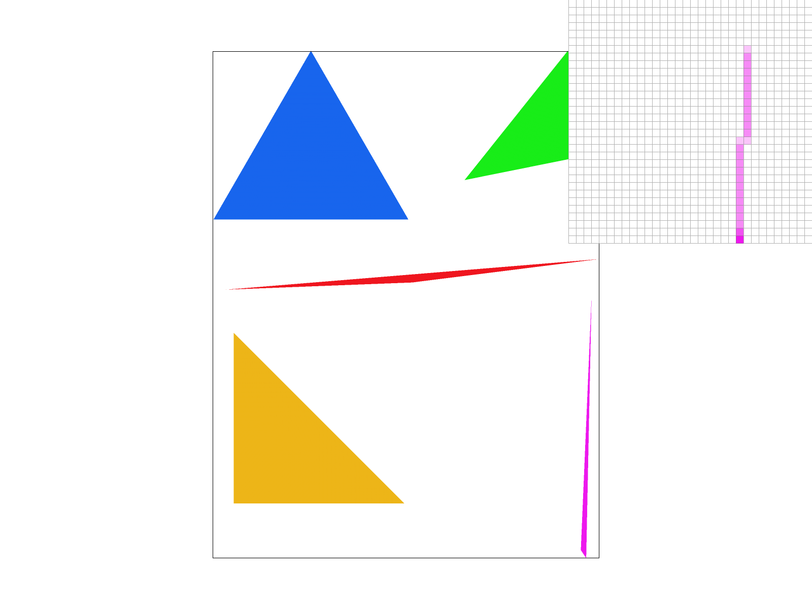
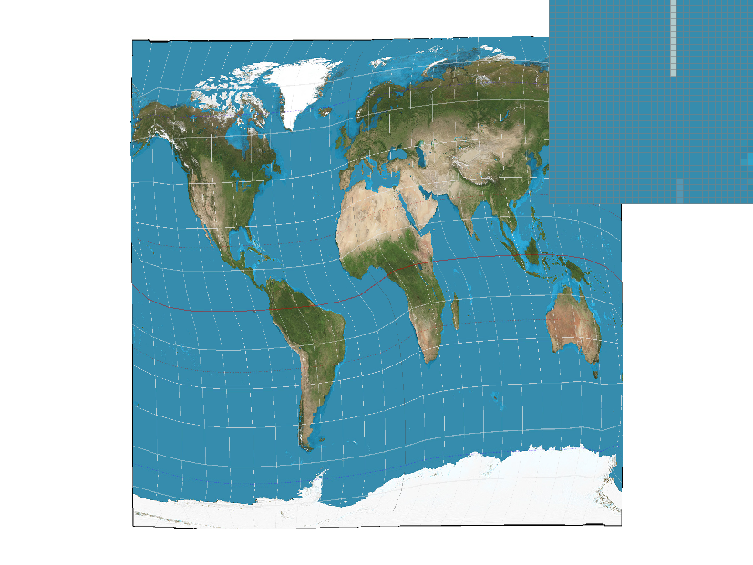
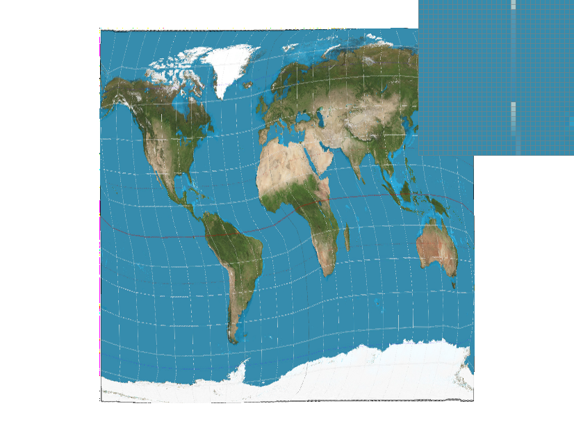
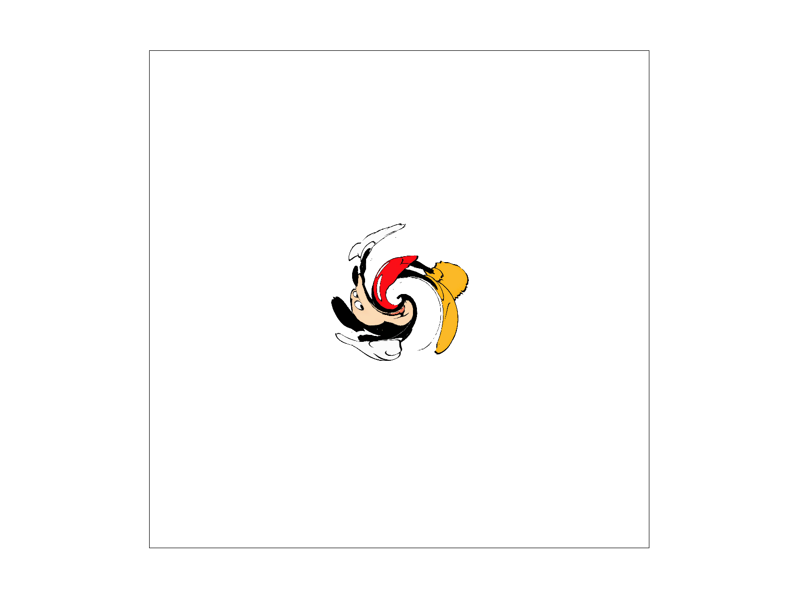
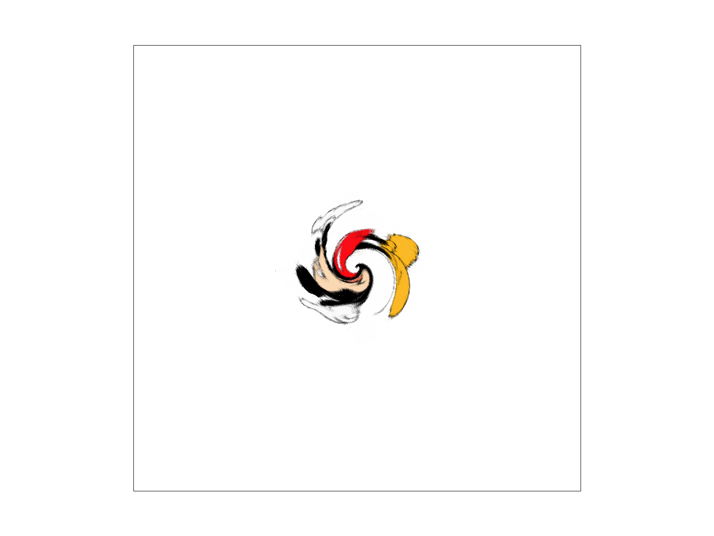

Overview
Give a high-level overview of what you implemented in this project. Think about what you've built as a whole. Share your thoughts on what interesting things you've learned from completing the project. We built a rasterizer to render triangles, implemented anti-aliasing strategies for it, and built a texture mapping sampler. Learned about various ways to antialias and how they contrast, about how applicable barycentric coordinates are, and how its difficult to choose images that show the differences between the configuration modes we've chosen.
Section I: Rasterization
Part 1: Rasterizing single-color triangles
Walk through how you rasterize triangles in your own words.
We iterate through a bounding box of points around the triangle, and for each of these points we compute whether a given point is inside the triangle. We do this computation using the point-in-triangle test. If a point is in the triangle, we color the pixel with the specified color.Explain how your algorithm is no worse than one that checks each sample within the bounding box of the triangle
We check each sample in the bounding box, so our algorithm is the same as the one mentioned.Show a png screenshot of basic/test4.svg with the default viewing parameters and with the pixel inspector centered on an interesting part of the scene.
Part 2: Antialiasing triangles
Walk through your supersampling algorithm and data structures. Why is supersampling useful? What modifications did you make to the rasterization pipeline in the process? Explain how you used supersampling to antialias your triangles.
We scaled the triangle's dimensions by the square root of the sampling rate so that we could sample more grid locations within the triangle. We also used a sample buffer that is scaled by the sampling rate. Once we sampled from all the grid locations, we needed to re-scale the sample buffer back down to the size of the frame buffer. We did this by averaging the samples we took in groups of whatever the sampling rate was, which scales the number of samples back down to the space we have in the frame buffer. Supersampling is useful because it allows us to antialias the triangle, specifically because taking more samples allows the edges of the triangle to smoothen out since fewer grid locations within the triangle are left unsampled. The modifications we made to the rasterization pipeline include using a sample buffer that is scaled up in size by the sampling rate and iterating over more grid locations, which is also scaled up by the sampling rate.Show png screenshots of basic/test4.svg with the default viewing parameters and sample rates 1, 4, and 16 to compare them side-by-side. Position the pixel inspector over an area that showcases the effect dramatically; for example, a very skinny triangle corner. Explain why these results are observed.
We observe that gradually more pink mass appears in the triangle because previously there were many points part of the triangle that we did not at all sample. We also observe that the pink becomes less strong i.e. giving a more blurry picture, which occurs because while previously if we happened to sample a point in the triangle we'd make the full pixel pink but now we sample surrounding points and adjust the strength based on whether those are in the triangle or not.

|

|
|
|
|
Part 3: Transforms
Create an updated version of svg/transforms/robot.svg with cubeman doing something more interesting, like waving or running. Feel free to change his colors or proportions to suit your creativity. Save your svg file as my_robot.svg in your docs/ directory and show a png screenshot of your rendered drawing in your write-up. Explain what you were trying to do with cubeman in words.
Section II: Sampling
Part 4: Barycentric coordinates
Explain barycentric coordinates in your own words and use an image to aid you in your explanation. One idea is to use a svg file that plots a single triangle with one red, one green, and one blue vertex, which should produce a smoothly blended color triangle.
Barycentric coordinates are like weights that we assign to each vertex of the triangle, and a weighted average of the vertices gives us a screen-space coordinate. We can then use the calculated barycentric coordinates to decide the color, texture or any other feature at a certain screen space point. In the case of the triangle above, one vertex is red, one is blue, and the other green. The barycentric coordinates that correspond to any point in the triangle will give the appropriate weights to assign to the red, blue and green values respectively.
Show a png screenshot of svg/basic/test7.svg with default viewing parameters and sample rate 1. If you make any additional images with color gradients, include them.

Part 5: "Pixel sampling" for texture mapping
Explain pixel sampling in your own words and describe how you implemented it to perform texture mapping. Briefly discuss the two different pixel sampling methods, nearest and bilinear.
We used the given points of the screen space triangle and the corresponding texture space coordinates to find the barycentric coordinates of any point that we were sampling. Once we found the barycentric coordinates, we were able to compute the corresponding texture space coordinate for a given screen space coordinate we were sampling. Once we found the texture space coordinates, we retrieved the appropriate texture from the texture map based on the coordinates we had. When using nearest neighbor sampling, we just rounded the coordinates we had down and then found the texture values on the texture map that correspond to these rounded down coordinates. For bilinear filtering, we used the texture coordinates and found the four nearest locations on the texture map and interpolated amongst those four points, as seen in lecture, to find the texture values we should use. Once we had the texture values, we could generate an image that is basically us taking the texture map and laying it on some kind of surface.
Check out the svg files in the svg/texmap/ directory. Use the pixel inspector to find a good example of where bilinear sampling clearly defeats nearest sampling. Show and compare four png screenshots using nearest sampling at 1 sample per pixel, nearest sampling at 16 samples per pixel, bilinear sampling at 1 sample per pixel, and bilinear sampling at 16 samples per pixel.
We can see that the nearest sampling is missing parts of the longitude lines and the lines pop out at the viewer because they are "on" and "off". These parts show up in the bilinear sampling!Comment on the relative differences. Discuss when there will be a large difference between the two methods and why.
There will be large differences between the two methods when there is a faster change in color, texture or other factor. If using nearest, the transition between the two colors or textures will be steep and strange looking, but bilinear would allow for transition to be smoother because we can sample from the surrounding points, effectively antialiasing high frequencies. Bilinear sampling's effects are also magnified when the image is displayed at a lower resolution, because that amplifies high frequencies relative to the resolution.
|

|
|
|

|
|
Part 6: "Level sampling" with mipmaps for texture mapping
Explain level sampling in your own words and describe how you implemented it for texture mapping.
Level sampling is when we sample from a potentially higher texture level whose resolution approximates the screen sampling rate, and these higher texture levels are formed by filtering out high frequencies and sampling at a lower resolution. To form higher levels, the process above is done recursively. We implemented it for texture mapping by finding the appropriate texture coordinates, finding the differentials of the texture coordinate parameters with respect to screen space coordinate parameters, and then using the formula from lecture to find the appropriate texture level that we should sample from. In nearest level sampling, we simply pick the level closest to the value we calculated. In Linear, we linearly interpolate between the two levels that the level value we calculated is in between, meaning we sample to some extent from both levels.
You can now adjust your sampling technique by selecting pixel sampling, level sampling, or the number of samples per pixel. Describe the tradeoffs between speed, memory usage, and antialiasing power between the three various techniques.
Pixel sampling is the fastest and uses the least memory, since it doesn't rely on a sample buffer. Level sampling and supersampling both use additional memory and corresponding compuptation. Supersampling has a similar effect to bilinear pixel sampling because they both result in a blur to antialias high frequencies, but supersampling uses more samples than pixels--this implies that it might be a good idea to use bilinear sampling instead when memory and computation are constrained. Bilinear sampling is good for texture sampling when the texture is large on the screen space, and level sampling is good for the opposite case because it contains lower resolution versions of the texture.
Using a png file you find yourself, show us four versions of the image, using the combinations of L_ZERO and P_NEAREST, L_ZERO and P_LINEAR, L_NEAREST and P_NEAREST, as well as L_NEAREST and P_LINEAR.
|
|

|
|
|

|
We can see that L_NEAREST and P_NEAREST performs best. L_NEAREST and P_LINEAR is too blurry, and using P_NEAREST clears it up. L_ZERO has aliasing and requires using lower resolution images.
Section III: Art Competition
If you are not participating in the optional art competition, don't worry about this section!